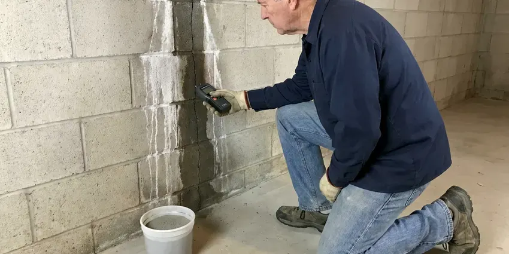

Flood Restoration in Saginaw, MI
Water in the basement or garage in Saginaw, MI? CHV Plumbing pumps it out, clears the silt and wet debris, and starts drying.
- Licensed & Insured
- Flood Cuts and Tear-Out
- Nights and Weekends
- High-Capacity Pumps

Flooded in Saginaw, MI? Call for a Pump-Out.
We handle cleanup, sanitizing, drying and repairs so you can focus on your family and home.
Flood Restoration in Saginaw, MI
CHV Plumbing uses submersible pumps and truck-mounted extractors to get flood water out fast in Saginaw, MI. The first day counts most. The longer water sits, the higher it climbs in drywall and the deeper it soaks into subfloor, adding to the tear-out.
Our expertise includes:
- Mud, silt and debris removal after storm runoff
- Structural drying and moisture control
- Submersible pumps for deep standing water

Additional Plumbing Maintenance Services in Saginaw, MI
Our maintenance and specialty plumbing services in Saginaw, MI catch small problems before they become emergencies.


Customers
Why Choose CHV Plumbing for Flood Restoration in Saginaw, MI?
Soil, bacteria and debris ride in with flood water and soak into building materials. Prompt cleanup and sanitizing protect your health and limit how much has to be replaced before the rebuild can start. Speed saves money.
- Clear Pricing, You see the estimate up front, with line items you can follow.
- Commercial Equipment, Submersible pumps, truck-mounted extractors and commercial dehumidifiers on every job.
- Moisture Mapping, Meters and thermal cameras find wet areas behind walls.
Citywide Coverage
We provide flood restoration in every neighborhood of Saginaw, including low-lying areas and streets that collect storm runoff. During storm season, crews stay staged with pumps and drying gear loaded. We move fast.
Experienced Team
Restoration technicians on our crew are trained in flood cleanup, contamination handling and structural drying. They work alongside our licensed plumbers, so flooded water heaters and drains get repaired while the drying in the house is still underway. No waiting between trades.
Safety-First Approach
Gas appliances that sat in flood water stay off until checked. We shut the gas at the appliance valve, inspect the burner, controls and venting, and replace any water heater whose gas valve or burner was submerged. Relighting is off limits.
Trusted Certified Saginaw Plumbing Services Professionals
At CHV Plumbing, we take pride in licensed, certified plumbing services throughout Saginaw, MI. Credentials matter in this trade. Every repair, install and maintenance visit follows strict safety and quality rules, and the plumbers doing the work carry recognized industry credentials.
Call Us Now PHCC Plumbing Contractor Recognition
PHCC Plumbing Contractor Recognition Better Business Bureau (BBB) Accreditation
Better Business Bureau (BBB) Accreditation Angi Certified Pro
Angi Certified Pro ISO 9001 Quality Management Certification
ISO 9001 Quality Management CertificationComplete Flood Restoration Services in Saginaw, MI
Sewage Backup Flood Restoration in Saginaw
Overloaded sewer systems during heavy storms can push sewage back up through floor drains. This water carries bacteria and needs careful removal, disinfection and disposal of every porous material it touched, from carpet pad to the bottom of the drywall. We clear the line too. Antimicrobial goes on before drying.

Thermal Imaging and Moisture Detection in Saginaw, MI
Water wicks up walls well past the visible line. A thermal camera shows the cool, damp areas behind drywall, and a moisture meter confirms them, so we know exactly where to cut and where to dry in place in your Saginaw home. No guesswork needed. We use it to confirm dry.
Flood Restoration Costs and Insurance in Saginaw, MI
Flood restoration costs depend on water depth, contamination level and how much material must be replaced. Many homeowners policies do not cover flooding from outside water, which usually requires a separate flood policy, while plumbing-related flooding is more often covered. Check your policy. We keep detailed records for any claim.
Sump Pump Installation for Flood Prevention in Saginaw, MI
A working sump pump is the first defense for a basement or crawl space. Heavy summer rainstorms in Michigan can overwhelm combined and storm sewers and push water back up through basement floor drains. Our plumbers install submersible and pedestal pumps from Zoeller and Wayne, sized to the pit and the inflow, with a check valve and a discharge line that carries water well away from the foundation. Add a backup pump. Storms knock out power.
Structural Drying and Dehumidification in Saginaw, MI
Air movers push air across wet surfaces, and dehumidifiers pull the moisture out. Most flood jobs in Saginaw use low-grain refrigerant units, with desiccant units brought in for cold basements, concrete and dense hardwood. Readings come daily. Drying ends when the numbers say so.
Water Heater and Plumbing Repair After Floods in Saginaw, MI
Gas water heaters, furnaces and electrical equipment that sat in flood water may not be safe to run. Manufacturers generally say a water heater with a submerged gas valve, burner or controls should be replaced, not dried out and relit. We do not relight them. Silted drains get cleaned out.
Sanitization and Odor Removal in Saginaw
Flood odor comes from bacteria growing in wet materials. Our flood restoration process in Saginaw removes the source, disinfects every surface the water touched, and runs HEPA air scrubbers to clean the air while drying continues. Covering the smell fails. Dry and clean ends the odor.

Commercial Flood Restoration in Saginaw, MI
Stores and offices in Saginaw, MI lose money every day they are closed after a flood. Phased work, overnight drying and enough equipment for a big floor help you reopen sooner. Your hours come first. You get a report each day.
Flood Restoration Near Me in Saginaw, MI
After a storm or burst pipe floods your home, help needs to arrive fast. Our crews are based nearby and keep pumps, extractors and drying equipment loaded and ready to go during storm season. Quick arrival saves material.
Searching for flood restoration near you in Saginaw, MI? CHV Plumbing keeps pumps, extractors and dehumidifiers on trucks stationed around the area. Being close matters. During a big storm, a crew that is already nearby can start pumping in an hour instead of half a day, and that difference shows up in how much drywall survives.
CHV Plumbing at a Glance
- Licensed and insured plumbers serving Saginaw, MI
- Same-day appointments and 24/7 emergency response
- Clear written estimates, no hidden fees
- 4.9-star rated by 670+ Michigan customers
Saginaw Map
Saginaw Information
- Population
- 43,185
- Area codes
- 989/517/231
- Service area
- Saginaw and towns within a 40 mile drive
- Nearby
- Bay City, Flint, East Lansing, Lansing
Sudden storms, hard ground and runoff from nearby drainage areas can flood Saginaw, MI homes with little warning, so fast flood restoration protects your property and health.
Talk to a Plumber
Reach out to CHV Plumbing for honest, reliable plumbing from people who know the trade in Saginaw, MI.
Our Specialized Plumbing Services in Saginaw, MI
At CHV Plumbing, we handle the full list of plumbing services across Saginaw, MI. From leak detection to full system installs, our team works fast and charges fair prices on homes and commercial properties alike. Explore our core services below:


How Flood Restoration Works in Saginaw, MI
Here is how we help you recover after a flood at your home or business.
Call Us
Call CHV Plumbing at (810) 380-5918 as soon as you see water. We send a crew to your Saginaw property and tell you how to stay safe in the meantime.
Assess
Technicians check for electrical hazards, find the source and measure moisture with meters and thermal imaging.
Pump Out
Submersible pumps and extractors remove standing water, and we clear the mud and debris.
Frequently Asked Questions About Flood Restoration in Saginaw
Smaller flood cleanups with extraction and drying often cost $2,500 to $6,000. Larger projects with contamination, mud removal and rebuild work can run $10,000 to $30,000 or more, especially in finished basements with carpet and built-ins. Insurance may help.
Peeling paint, visible mold spots and warped flooring are the usual signs. Stained walls, lingering odors or loose baseboards also point to trapped water. Thermal cameras find it.
We remove saturated porous materials, apply antimicrobial to the framing and dry the structure with commercial dehumidifiers and air movers. Moisture readings confirm materials are dry before rebuild. Fast action is the best way to stop mold.
Yes, our repairs carry a workmanship warranty. Final readings get recorded before rebuild, showing the structure was dry. Terms come in writing.
Stay safe and avoid electrical hazards. If possible, shut off power and water to affected areas and take photos of the damage. Next, get extraction started before the water climbs further up the walls.
Standard homeowner's policies usually exclude flooding from outside surface water. Outside floods usually need a flood policy, and inside plumbing failures are more often covered. Check your policy.
Repairs and rebuild work from CHV Plumbing are warrantied against defects in workmanship. Any plumbing we repair or replace is also covered, and new water heaters carry the manufacturer's tank warranty, which we register for you. Terms come on paper.
Usually, if the controls went under. Water heaters whose burners, gas valves or insulation were submerged are often unsafe and should be replaced rather than relit. Each heater gets inspected, and we recommend based on what was underwater.
What Our Customers Say About Our Plumbing Experts

Carlos V.
Our house still had galvanized pipe, and upstairs the shower was a trickle. The crew repiped everything in PEX over three days and patched every drywall hole before they left. The pressure difference is night and day.
Repiping · Flint, MI
Karen W.
After our third pinhole leak in copper, we stopped patching. CHV Plumbing gave us a written plan room by room and repiped the house in PEX while we stayed in it. The crew covered our floors every morning and cleaned up every night.
Repiping · Rochester Hills, MI
Robert G.
The camera showed a full break in our clay sewer line near the street. CHV Plumbing replaced it with a trenchless pipe burst, so the only digging was two small pits in the yard. They let us watch the footage before and after.
Sewer Line Replacement · Flint, MI
Brian W.
I smelled gas behind the dryer and called right away. The plumber found a corroded flex connector, replaced it, and pressure tested the whole line before turning the gas back on. He let me watch the gauge hold steady for fifteen minutes.
Gas Line Repair · Flint, MI
Sofia M.
Two new toilets went in during one visit. The tech set them on new wax rings and swapped the old supply lines. He also noticed our bathroom faucet dripping and replaced the cartridge while he was there. No mess left behind.
Toilet Installation · Rochester Hills, MIJessica T.
We were adding a gas range in a kitchen remodel and needed a new line run from the meter. The plumber pulled the permit, ran the pipe through the crawl space, and had it inspected and approved within the week.
Gas Line Repair · Lansing, MI